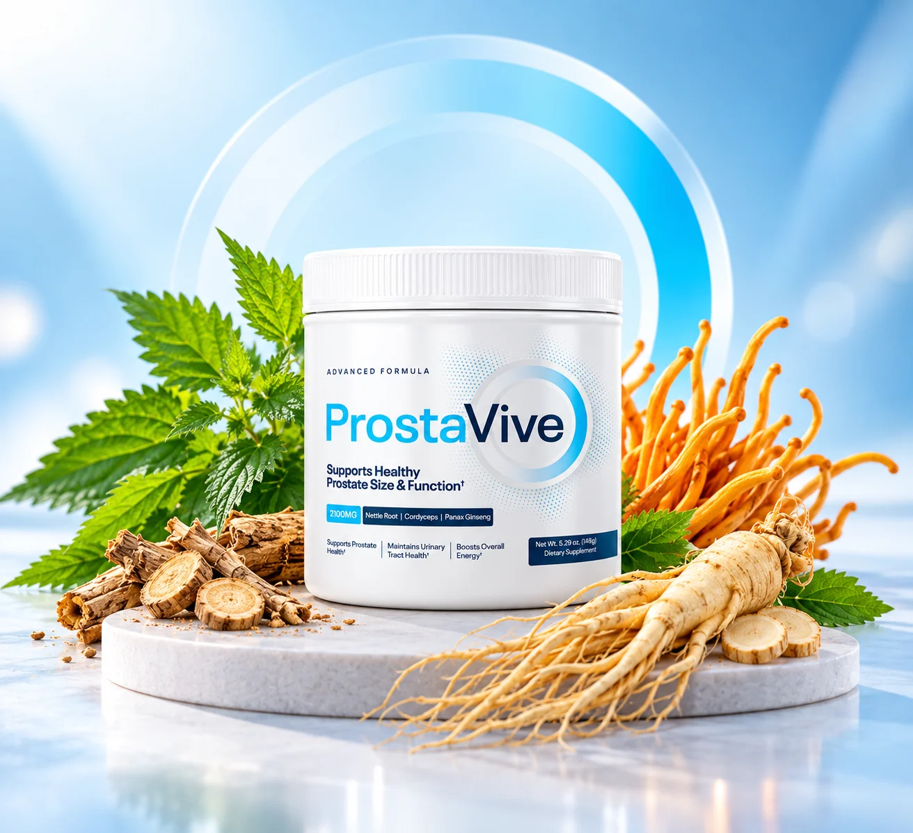
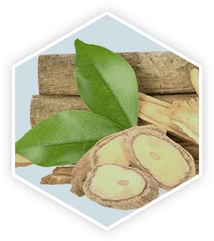
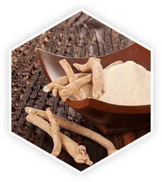
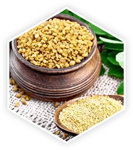
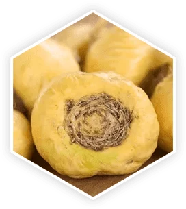
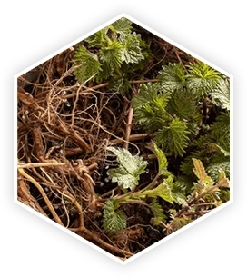
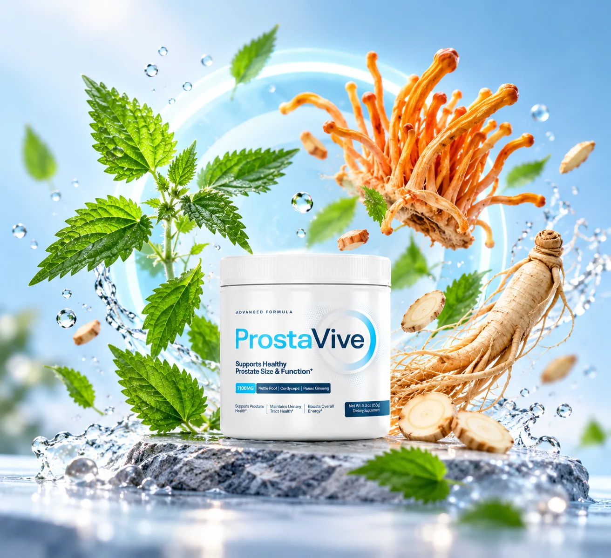
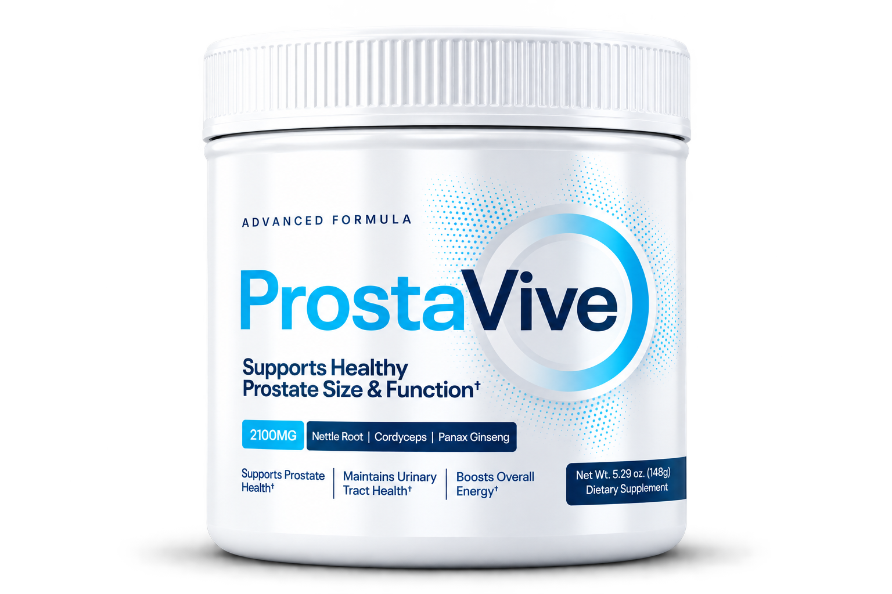
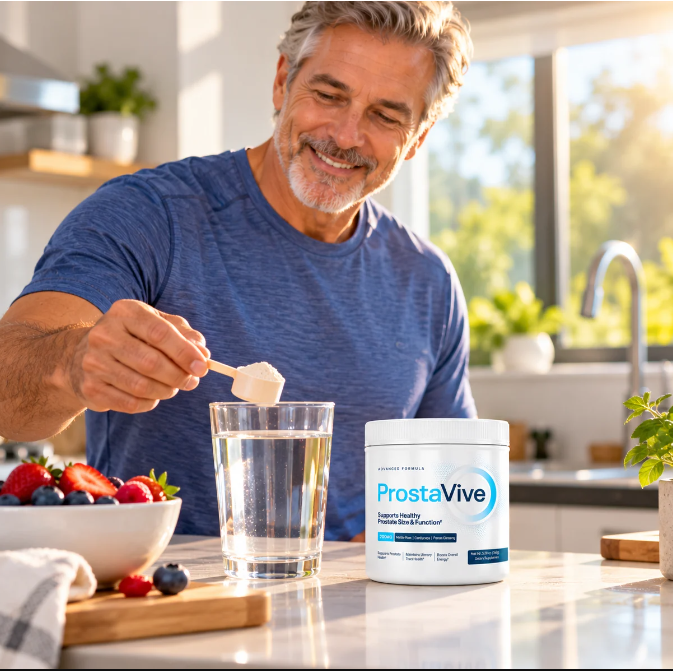

Take a Closer Look at ProstaVive: Daily Support for Men's Wellness
Discover a supplement formulated with a blend of botanical ingredients, vitamins, and minerals designed to complement your daily wellness routine. Explore the formula, learn about its ingredients, and find out whether ProstaVive may be a fit for your personal wellness goals.
CONHEÇA PROSTAVIVE
WHAT IS PROSTAVIVE?
Get to Know ProstaVive
As men get older, maintaining healthy habits and paying attention to personal wellness become increasingly important. ProstaVive is a dietary supplement featuring a combination of botanical extracts and essential nutrients, including Tongkat Ali, Ashwagandha, Fenugreek, Panax Ginseng, and selected vitamins and minerals.
Its formula is designed for adults interested in incorporating a supplement into a broader approach to everyday wellness. Whether you’re reviewing the ingredients or comparing available options, understanding what’s inside the formula is a useful first step.
CONHEÇA PROSTAVIVEA Blend of Botanical Ingredients and Essential Nutrients
ProstaVive combines several ingredients commonly used in dietary supplements

Tongkat Ali
Traditionally used in Southeast Asia, Tongkat Ali is known for its association with men's vitality and wellness. Discover why this botanical is included in the ProstaVive formula.

Ashwagandha
Ashwagandha is a traditional botanical commonly associated with stress management and overall well-being. Explore its role in the ProstaVive formula.

Fenugreek
Fenugreek is a traditional herb studied for its potential role in men's wellness and metabolic health. Learn more about its place in the ProstaVive blend.
Panax Ginseng
Panax ginseng has a long history of traditional use and is commonly associated with vitality and energy. Discover why it is included in the ProstaVive formula.

Maca Root
Maca root is a traditional Peruvian plant commonly associated with energy, vitality, and men's wellness. Explore its role in the ProstaVive blend.

Nettle Root
Nettle root has a history of traditional use in men's wellness and urinary health. Discover why this botanical is included in the ProstaVive formula.
Artichoke Extract
Artichoke extract contains naturally occurring compounds, including antioxidants. Learn more about this botanical ingredient and its role in the ProstaVive formula.
Boron
Boron is an essential trace mineral involved in several processes in the body. Learn more about its role in overall health and why it is included in the ProstaVive formula.
WHY LOOK CLOSER AT PROSTAVIVE?
Make an Informed Choice About Your Daily Wellness Routine
Choosing a supplement involves more than looking at a product name. It’s worth understanding the formula, reviewing the serving instructions, and considering how a supplement fits into your existing routine. Here are three things to explore when evaluating ProstaVive:

A Multi-Ingredient Formula
Review the combination of botanical ingredients, vitamins, and minerals included in the product.
Convenient Daily Use
Consult the manufacturer's directions to understand the recommended serving size and how the product is intended to be used.
Product Transparency
Review product details, package options, and return policies before deciding.
HOW DOES PROSTAVIVE FIT INTO YOUR ROUTINE?
Start With the Details That Matter
-
Before adding any dietary supplement to your routine, take a moment to understand the product.
- Review the complete ingredient list.
- Read the manufacturer’s directions for use.
- Check the serving size and package options.
- Consider any allergies, medications, or existing health conditions.
- Consult a qualified healthcare professional if you have questions about whether the formula is appropriate for you. ProstaVive should be considered as a supplement, not as a replacement for a balanced diet, healthy habits, or professional medical care.
PRODUCT INFORMATION
What to Know Before You Order
Before purchasing ProstaVive, review the following details on the official offer page:
Product Info:
Confirm the current format and serving instructions.
Ingredients:
Review the complete label and ingredient quantities.
Pack Sizes
Compare the available quantities and total prices.
Shipping Info:
Check delivery availability, shipping charges, and estimated delivery times.
Refund Policy:
Review the seller's current terms and applicable conditions.
Customer care:
Confirm how to contact the seller if you have questions.
Product availability, pricing, shipping terms, and promotional offers may change.

IS PROSTAVIVE RIGHT FOR YOU?
Take Time to Review Your Options
If you’re considering ProstaVive, start by reviewing the ingredient list and the manufacturer’s product information. Dietary supplements are not suitable for everyone. If you have concerns about prostate or urinary health, persistent urinary symptoms, or changes in sexual function, speak with a qualified healthcare professional. Do not use a supplement as a substitute for medical evaluation or treatment. If you take prescription medication or have an existing medical condition, consult your healthcare professional before using the product. An informed decision begins with reliable information.
CONHEÇA PROSTAVIVEFrequently Asked Questions
What is ProstaVive?
ProstaVive is a dietary supplement containing a blend of botanical ingredients, vitamins, and minerals. Review the official product information for the complete formula and intended use.
What ingredients does ProstaVive contain?
Aqui você coloca a resposta detalhada sobre os ingredientes do produto...
How do I take ProstaVive?
Instruções de como tomar o suplemento...
IS PROSTAVIVE RIGHT FOR YOU?
Take Time to Review Your Options
If you’re considering ProstaVive, start by reviewing the ingredient list and the manufacturer’s product information. Dietary supplements are not suitable for everyone. If you have concerns about prostate or urinary health, persistent urinary symptoms, or changes in sexual function, speak with a qualified healthcare professional. Do not use a supplement as a substitute for medical evaluation or treatment. If you take prescription medication or have an existing medical condition, consult your healthcare professional before using the product. An informed decision begins with reliable information.
CONHEÇA PROSTAVIVE